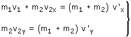
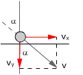

Choque oblicuo
Las velocidades de los cuerpos que chocan no tienen la misma
dirección. Se toma un eje en la dirección de una de las
veloci-dades
Conservación del momento lineal (•)
|
(Eje x en la dirección
de v1) |
|
v1 v2x v2y |
Comp. de velocidades antes del choque |
v'1x v'1y v'2x
v'2y |
Comp. de velocidades déspues del choque |
No se pone signo a las componentes
de la velocidad pues estas lo llevan incluido. Cuando sean incógnitas,
al despejarlas se ob-tendrá el valor con su signo y cuando sean
datos habrá que sustituir la variable por el valor con su signo
Choque oblicuo totalmente inelástico
Se aplica el principio de conservación teniendo en cuenta que los
cuerpos quedan incrustados y tienen la misma velocidad

Choque oblicuo con pared o suelo (Masa
infinita)
Se conserva la componente de la velocidad paralela
a la super-ficie (La fuerza de contacto con la superficie es normal a
esta y solo cambia la componente normal de la velocidad)
 |
|
v'x = vx
v'·sen α' = v sen α |
Aunque se conserva el momento lineal no se puede aplicar la ecuación
porque el momento lineal de la pared o suelo es inde-terminado (∞·0)
Importante
Si en cualquiera de los casos se necesitaran mas ecuaciones habría
que acudir al balance de energía cinética antes y des-pués
del choque
Conservación
de la energía cinética
|